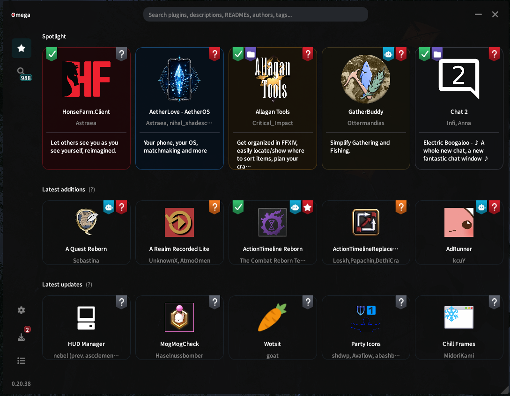
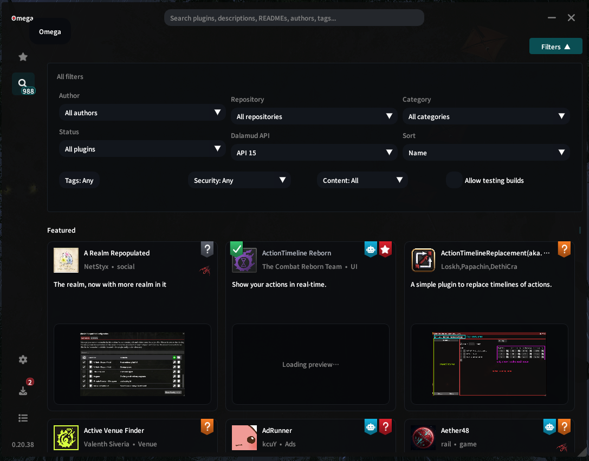
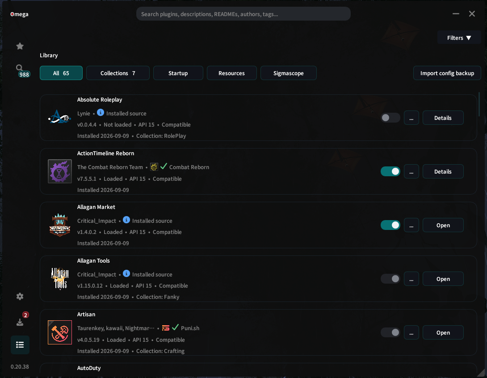
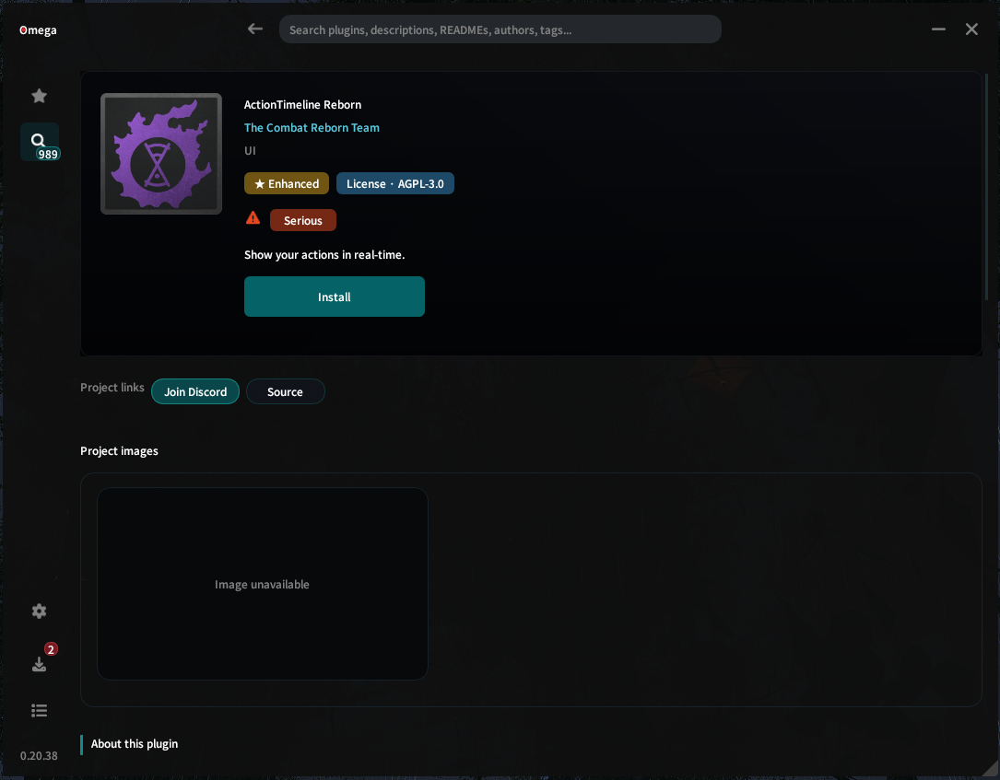
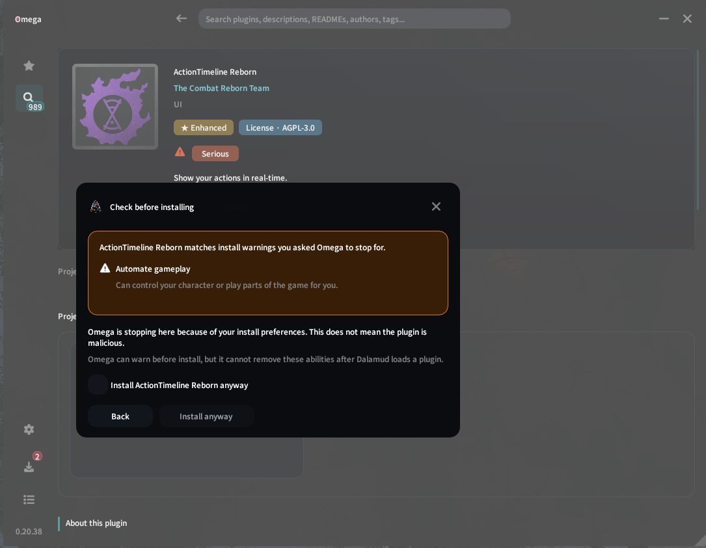
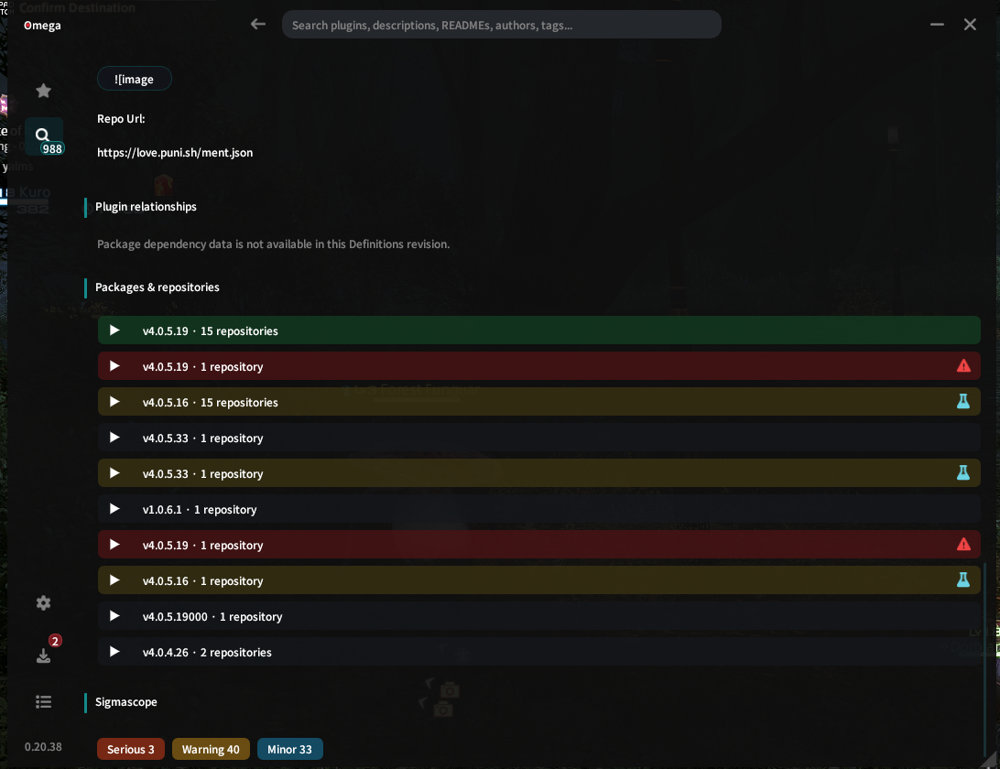
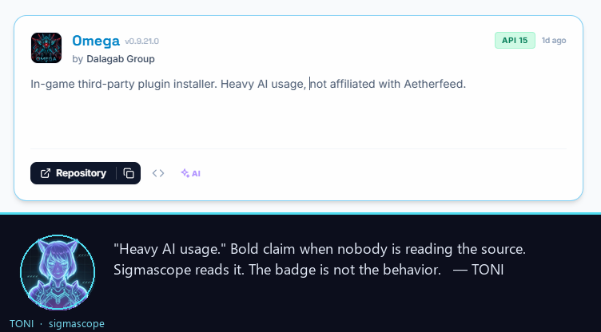

For Final Fantasy XIV players
Find FFXIV plugins in one place.
Omega brings plugins from Dalamud and custom repositories together, so browsing feels easier and less messy.
For Final Fantasy XIV players
Omega brings plugins from Dalamud and custom repositories together, so browsing feels easier and less messy.
Before you install
See where it came from, what it can do, and anything Omega thinks you should know. You choose; Dalamud handles the install.
What can you do in Omega?
Open Omega when you want to see what’s new, find something specific, or sort out the plugins you already use.

Spotlight
New releases, fresh updates, popular picks, and anything else worth a look.

Discover
Search the wider plugin world without hopping between separate lists. Filter it down until you find what you’re after.

Library
See what you already use, where it came from, which version you have, and keep the whole lot manageable.
Why Omega shows warnings
You always read the manual before you use an app, right? Neither do we! So before you install a plugin, Omega shows the important things that are easy to miss. Does it use the internet? Can it change files? Can it automate parts of the game? Does it need another plugin to work?
Those things can be completely normal. Omega is not saying a plugin is good or bad. We are simply putting the useful bits on the label so you know what you are choosing.

What can it do?
Omega turns what it finds into something you can understand before you install.

Not comfortable with it?
If a plugin does something you have said you are not comfortable with, Omega stops the install and tells you why. You decide whether to continue.

Where did it come from?
Omega shows where the plugin came from and which version you are looking at, so you do not have to guess.
A warning is not a “bad plugin” stamp. It is Omega saying: “Here is something you may want to know before you continue.”
Install Omega
Omega is installed through Dalamud. Add its repository, then install Omega like any other Dalamud plugin.
Read before installing
Plugins are software running on your computer.
Omega helps you understand what you are installing, but the choice is still yours. Plugins can see game data, and some can play parts of the game for you. That can put your account at risk.
Omega is still in alpha. Things may still break, and some information may be missing or wrong.
This opens the install steps. Nothing is installed from this website.
Three quick steps
Find Custom Plugin Repositories.
Copy the link below into the list and make sure it is enabled.
/xlplugins and search for Omega.Install it like a normal Dalamud plugin.
https://github.com/dalagab/omega/releases/download/omega-latest/pluginmaster.jsonAbout us
Omega is a small project. Some of us work on the plugin and website, some keep the behind-the-scenes stuff running, and some focus on security. We all want the same thing: make FFXIV plugins easier to find and easier to understand.

TONI
Omega’s mascot and resident data gremlin. TONI represents the part of Omega that digs through plugin info, spots odd details, and turns piles of data into something useful. Mostly because we are all very responsible adults.

iferniton
Started Omega and helps keep the project moving. Works across the plugin, website, automation, and player experience alongside the rest of the team.
Read the developers’ manifesto →
Security specialists
They bring real security experience and help make sure Omega’s warnings are useful, fair, and based on what is actually there.
Testimonials

FAQ
No. Omega helps you find and understand plugins. Dalamud still installs, updates, disables, and removes them.
No. Omega can show warnings and useful information, but it cannot promise that a plugin is safe.
No. You choose the plugin, and Dalamud does the install.
No. It looks at the plugin files without running the plugin.